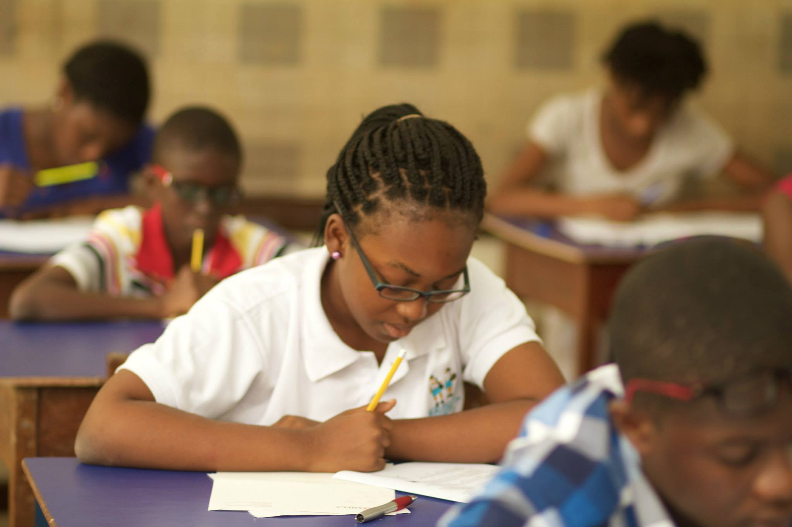
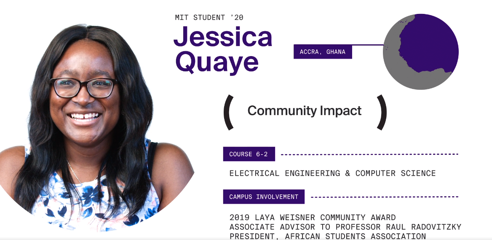

In 2012, I volunteered for the MISE program in Ghana. This summer program discovers and trains the most promising students in Ghana in math and science.
Together, we built a math contest reaching 3000 top students across Ghana. We train hundreds of students each year in Olympiad mathematics, computer science, and research topics ranging from AI to computational biology. Our dream is to educate the next generation of African scientists.
Through MISE, I co-founded the International Math Olympiad (IMO) team in Ghana, and the first Math Olympiad training program in the country. I've been building this program for over a decade.
In 2020, two MISE alums won the top engineer awards at MIT and Princeton, an unprecedented feat in West African history. They each credit MISE heavily for its success.
These alumni each credit MISE for their success, and for their acceptance into college in the United States. Other alums have gone on to work at e-commerce startups in Zimbabwe, win scholarships at MIT, organize coding workshops in West Africa, work at Google, become metallurgical engineers in Ghana, study chemical engineering in Atlanta, and more.
This year's IMO team consists of Prince Debrah, Keith Torpey, Sylvester Arizie, and Roni Edwin. Good luck to the contestants!